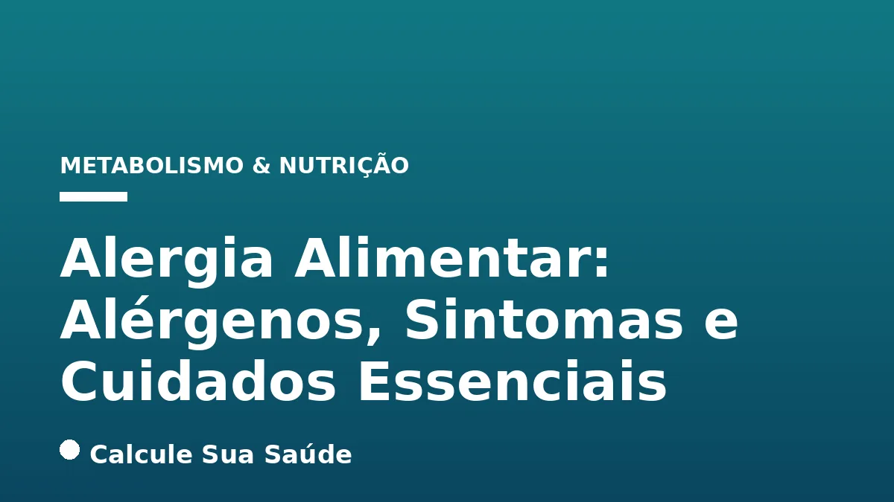
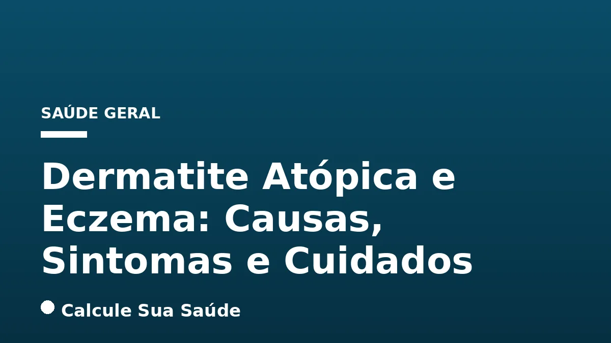
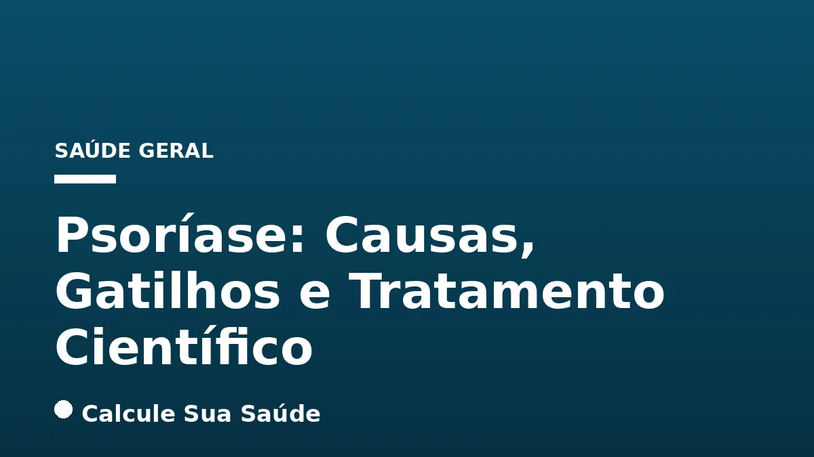
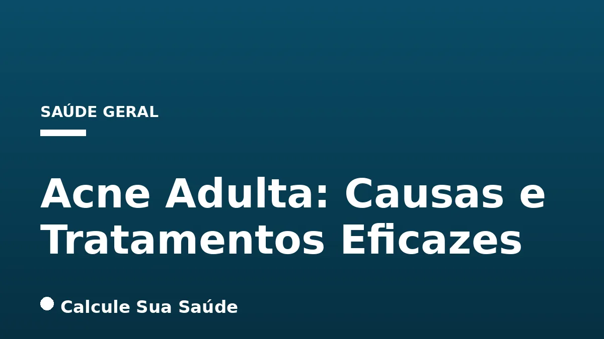
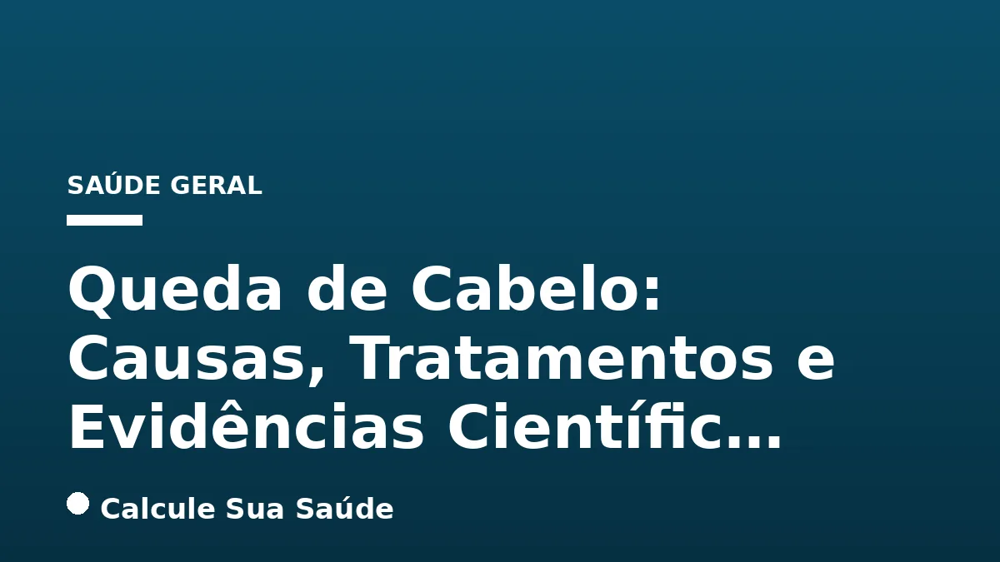

Todos os artigos

Alergia Alimentar: Alérgenos, Sintomas e Cuidados Essenciais
Alergia alimentar é uma resposta imune a alimentos. Conheça os alérgenos comuns, sintomas e cuidados essenciais para um manejo seguro e eficaz.

Dermatite Atópica e Eczema: Causas, Sintomas e Cuidados
A dermatite atópica, também conhecida como eczema atópico, é uma doença inflamatória crônica da pele caracterizada por coceira intensa e lesões.

Psoríase: Causas, Gatilhos e Tratamento Científico
A psoríase é uma doença inflamatória crônica da pele, de natureza autoimune e não contagiosa, que exige manejo contínuo e individualizado.

Acne Adulta: Causas e Tratamentos Eficazes
A acne adulta afeta milhões de pessoas, principalmente mulheres, e entender suas causas e tratamentos eficazes é crucial para uma pele saudável.

Queda de Cabelo: Causas, Tratamentos e Evidências Científic…
A queda de cabelo, ou alopecia, é uma condição multifatorial. Compreender suas causas e tratamentos baseados em evidências é crucial para um manejo e…

Hemorroidas: Causas, Sintomas, Graus e Tratamento Completo
Um guia completo e aprofundado sobre hemorroidas, abordando suas causas, sintomas, classificação por graus e as opções de tratamento baseadas em evid…

Constipação Intestinal: Causas, Diagnóstico e Tratamento
A constipação intestinal, um sintoma gastrointestinal comum, exige uma compreensão aprofundada de suas causas e tratamentos baseados em evidências.

Cálculo Biliar: Sintomas, Diagnóstico e Tratamento
O cálculo biliar, ou pedra na vesícula, é uma condição comum que pode causar dor intensa e requer atenção médica para diagnóstico e tratamento adequa…

Infecção Urinária: Causas, Sintomas e Prevenção
A infecção urinária é uma condição comum, mas que exige atenção. Compreender suas causas, sintomas e métodos de prevenção é crucial para a saúde.

Asma: Gatilhos, Controle e Tratamento Baseado em Evidências
A asma é uma doença respiratória crônica que, embora não tenha cura, pode ser efetivamente controlada com o tratamento e manejo adequados.

Artrite Reumatoide: Sinais, Diagnóstico e Tratamento
A Artrite Reumatoide é uma doença autoimune crônica que causa inflamação nas articulações, dor e rigidez, exigindo diagnóstico e tratamento precoces.

Tendinite: Causas, Sintomas e Recuperação Efetiva
A tendinite é a inflamação de um tendão, causando dor e limitação de movimento, mas com o tratamento correto, a recuperação é possível.

Postura: Impactos na Saúde e Como Corrigir no Dia a Dia
A postura adequada é crucial para a saúde geral, prevenindo dores e melhorando a qualidade de vida, mas a ciência desmistifica a ideia de uma "postur…

Alongamento e Mobilidade: Benefícios e Prática Segura
Entenda a importância do alongamento e da mobilidade articular para a saúde, desempenho e prevenção de lesões, e aprenda a praticar com segurança.

Recuperação Muscular: Sono, Nutrição e Descanso
A recuperação muscular é um processo fisiológico vital para atletas e praticantes de atividade física, dependendo crucialmente do sono, nutrição e de…

Caminhada: Benefícios para a Saúde e Quantos Passos Diários
A caminhada é uma atividade física acessível e poderosa, oferecendo amplos benefícios para a saúde física e mental, com metas de passos diários basea…

Exercício Aeróbico: Benefícios, Intensidade e Recomendações
O exercício aeróbico é fundamental para a saúde, oferecendo benefícios que vão do coração à mente, e entender sua intensidade e frequência é crucial…

Treino de Força para Iniciantes: Benefícios e Como Começar
O treino de força oferece benefícios metabólicos profundos para iniciantes, sendo uma ferramenta essencial para a saúde e o bem-estar geral.

Saúde Cardiovascular da Mulher: Diferenças, Riscos e Preven…
As doenças cardiovasculares são a principal causa de morte em mulheres, exigindo uma abordagem específica devido a diferenças fisiopatológicas e sint…

Inflamação Crônica de Baixo Grau: O Que É e Como Reduzir
A inflamação crônica de baixo grau é um processo silencioso que pode impactar sua saúde a longo prazo; saiba como identificá-la e reduzi-la.

Saúde Óssea Após os 40: Cálcio, Vitamina D e Exercício
Após os 40, a saúde óssea exige atenção redobrada. Conheça o tripé essencial: cálcio, vitamina D e exercício de força para prevenir a osteoporose.

Diabetes Tipo 1: Diferenças, Sintomas e Tratamento Completo
O Diabetes Tipo 1 é uma doença autoimune crônica que exige manejo contínuo da insulina para controlar os níveis de glicose no sangue e prevenir compl…

Metabolismo Lento: Mito ou Verdade? A Ciência Responde
Entenda o que a ciência revela sobre o metabolismo lento, desvendando mitos e verdades sobre o gasto energético do corpo humano.

Dieta Cetogênica (Keto): Como Funciona, Benefícios e Riscos
A dieta cetogênica, ou keto, é um plano alimentar rigoroso que restringe carboidratos para induzir a cetose, um estado metabólico onde o corpo queima…

Índice Glicêmico e Carga Glicêmica: Guia Prático
Compreender o Índice Glicêmico (IG) e a Carga Glicêmica (CG) é fundamental para gerenciar o açúcar no sangue e promover uma saúde metabólica robusta.

Adoçantes: Segurança e Evidências Científicas
A segurança dos adoçantes é um tema de debate intenso. Este artigo explora as evidências científicas, os tipos de adoçantes e as recomendações de saú…

Açúcar: Efeitos no Corpo e Estratégias para Reduzir o Consu…
O consumo excessivo de açúcar tem impactos profundos na saúde, desde o ganho de peso até o risco de doenças crônicas graves.

Intolerância à Lactose: Sintomas, Testes e Alternativas
A intolerância à lactose é a incapacidade de digerir o açúcar do leite, causando desconforto digestivo; saiba como identificar e gerenciar.

Glúten: Doença Celíaca, Sensibilidade e Quem Evitar
Aprenda sobre as condições relacionadas ao glúten, como a doença celíaca e a sensibilidade não celíaca, e descubra quem realmente precisa evitá-lo.

Probióticos e Prebióticos: Guia Completo e Evidências
Probióticos e prebióticos são essenciais para a saúde intestinal, atuando de formas distintas para equilibrar a microbiota e promover bem-estar geral.

Cálcio: Necessidades, Fontes e Absorção Essencial
O cálcio é um mineral fundamental para a saúde óssea e diversas funções vitais, e sua ingestão e absorção adequadas são cruciais em todas as fases da…

Zinco: Funções Essenciais, Deficiência e Suplementação
Explore o papel fundamental do zinco na saúde humana, desde suas funções metabólicas e imunológicas até os sinais de deficiência e as diretrizes de s…

Ferro: Alimentos, Absorção e Suplementação Essencial
O ferro é um mineral crucial para a vida, e sua deficiência é um problema de saúde pública global, exigindo atenção à dieta e, por vezes, suplementaç…

Vitamina C: Funções, Dose e Mitos da Imunidade
A Vitamina C é um nutriente essencial com múltiplas funções no organismo, desde a síntese de colágeno até a proteção antioxidante, mas seu papel na i…

Imunidade: Como Fortalecer de Forma Real e Científica
Aprenda a fortalecer sua imunidade de forma real e duradoura, com estratégias baseadas em evidências científicas e sem cair em promessas milagrosas.

Estresse: Técnicas Baseadas em Evidências para Lidar
Aprenda a gerenciar o estresse com estratégias comprovadas, desde mudanças no estilo de vida até terapias baseadas em evidências.

Saúde Mental Masculina: Sinais, Tabus e Ajuda
A saúde mental masculina é um desafio complexo, marcado por sinais sutis e tabus que dificultam a busca por ajuda. Entenda como identificar os alerta…

Melatonina: Funciona? Dose, Segurança e Uso
A melatonina, hormônio do sono, é eficaz para algumas condições, mas seu uso exige conhecimento sobre dosagem, segurança e evidências científicas.

Higiene do Sono: Hábitos Baseados em Evidências para Dormir…
A higiene do sono é um conjunto de práticas e comportamentos que visam otimizar a qualidade e a duração do sono, essencial para a saúde.

Sono Profundo: Fases, Importância e Melhoria
O sono profundo é uma fase crucial para a recuperação física e mental, e sua qualidade impacta diretamente a saúde geral e o bem-estar.

Varizes: Causas, Tratamentos e Prevenção Completa
Varizes são veias dilatadas e tortuosas que afetam a circulação, causando desconforto e podendo levar a complicações sérias; conheça suas causas, tra…

Aterosclerose: Formação de Placas e Prevenção
A aterosclerose, uma doença inflamatória crônica, é a principal causa de doenças cardiovasculares, mas pode ser prevenida e gerenciada com conhecimen…

Trombose Venosa Profunda: Sinais, Riscos e Prevenção
A Trombose Venosa Profunda (TVP) é uma condição séria que exige conhecimento sobre seus sinais, fatores de risco e estratégias eficazes de prevenção.

Insuficiência Cardíaca: Causas, Sinais e Tratamento
A insuficiência cardíaca é uma síndrome complexa que impede o coração de bombear sangue eficientemente, exigindo diagnóstico e tratamento precoces.

Arritmia Cardíaca: Tipos, Sintomas e Quando Se Preocupar
A arritmia cardíaca é uma alteração no ritmo dos batimentos do coração, podendo ser rápida, lenta ou irregular, e exige atenção médica para diagnósti…

Pressão Alta na Juventude: Causas, Riscos e Prevenção
A pressão alta em crianças e adolescentes é uma condição silenciosa e crescente, demandando atenção urgente às suas causas, riscos e estratégias de p…

Sarcopenia: Perda de Massa Muscular e Prevenção no Envelhec…
A sarcopenia, a perda de massa muscular associada ao envelhecimento, é uma condição séria que compromete a qualidade de vida, mas pode ser prevenida…

Câncer Colorretal: Sinais, Rastreamento e Prevenção
O câncer colorretal é uma doença tratável e curável quando detectada precocemente, e sua prevenção é amplamente possível através de hábitos saudáveis…

Câncer de Pele: Tipos, Regra ABCDE e Proteção Solar
Descubra os tipos de câncer de pele, aprenda a regra ABCDE para detecção precoce e saiba como a proteção solar é fundamental para sua saúde.

Câncer de Próstata: Sintomas, Exames (PSA) e Prevenção
O câncer de próstata é o segundo tipo de câncer mais comum entre homens no Brasil. Conheça seus sintomas, a importância do PSA e como prevenir.

Câncer de Mama: Prevenção, Sinais e Mamografia
O câncer de mama é uma doença complexa, mas a informação e o diagnóstico precoce são cruciais para aumentar as chances de cura e sobrevida.

Artrose (Osteoartrite): Causas, Sintomas e Manejo Completo
A artrose é uma doença degenerativa crônica que afeta as articulações, causando dor, rigidez e perda de função devido ao desgaste da cartilagem.

Hérnia de Disco: Sintomas, Diagnóstico, Tratamento e Preven…
A hérnia de disco é uma condição da coluna vertebral que pode causar dor intensa e outros sintomas, mas que possui diversas abordagens de tratamento…

Dor Lombar: Causas, Sinais de Alerta e Alívio Baseado em Ev…
A dor lombar é um sintoma comum que afeta grande parte da população. Compreender suas causas e tratamentos é essencial para o alívio e prevenção.

Síndrome do Intestino Irritável: Sintomas, Gatilhos e Manejo
A Síndrome do Intestino Irritável (SII) é um transtorno gastrointestinal funcional crônico que causa dor abdominal e alterações no hábito intestinal,…

Refluxo, H. pylori e Úlcera: Diagnóstico e Tratamento
A relação entre refluxo gastroesofágico, a bactéria H. pylori e o desenvolvimento de úlceras é complexa e exige compreensão aprofundada para um trata…

Gastrite: Causas, Sintomas, Tipos e Alimentação
A gastrite, inflamação da mucosa gástrica, é uma condição comum que pode ser aguda ou crônica, com causas variadas e manejo focado na dieta e tratame…

TOC: Sinais, Diagnóstico e Tratamento Baseado em Evidências
O Transtorno Obsessivo-Compulsivo (TOC) é um distúrbio mental crônico caracterizado por obsessões e compulsões, mas com diagnóstico e tratamento efic…

Transtorno Bipolar: Sintomas, Tipos e Tratamento
O transtorno bipolar é uma condição crônica de saúde mental caracterizada por oscilações extremas de humor, entre episódios de mania e depressão.

Síndrome do Pânico: Sintomas, Crises e Tratamento
A Síndrome do Pânico é um transtorno de ansiedade caracterizado por ataques de pânico recorrentes e inesperados, que podem ser debilitantes mas são t…

Hipertireoidismo: Sintomas, Causas e Tratamento
O hipertireoidismo é uma condição da tireoide que acelera o metabolismo, manifestando-se com sintomas variados e exigindo diagnóstico e tratamento pr…

Tireoidite de Hashimoto: Causas, Sintomas e Tratamento
A Tireoidite de Hashimoto é uma doença autoimune crônica que ataca a tireoide, levando ao hipotireoidismo e exigindo tratamento contínuo.

Cirurgia Bariátrica: Tipos, Indicações e Acompanhamento
A cirurgia bariátrica é uma ferramenta poderosa no tratamento da obesidade severa, exigindo compreensão profunda de seus tipos, indicações e um compr…

Fibras Alimentares: Tipos, Quantidade e Impacto na Saúde
As fibras alimentares são componentes vegetais cruciais que, embora não digeridas, promovem inúmeros benefícios à saúde, da digestão ao controle de d…

Ácido Úrico e Gota: Causas, Alimentação e Tratamento
A gota é uma doença inflamatória articular causada pelo acúmulo de cristais de ácido úrico, sendo potencialmente curável com tratamento adequado.

Colágeno: Funções, Tipos e Evidências Científicas
O colágeno é a proteína mais abundante do corpo, essencial para pele, ossos e articulações; a ciência valida benefícios da suplementação.

Whey Protein: Tipos, Benefícios e Uso Correto
O whey protein é um suplemento derivado do soro do leite, rico em aminoácidos essenciais, fundamental para massa muscular, recuperação e saúde geral.

Proteína: Consumo Diário, Fontes e Impacto na Saúde
A proteína é um macronutriente essencial para a construção e reparação de tecidos, e seu consumo adequado é vital para a saúde geral.

Síndrome Metabólica: Diagnóstico, Riscos e Reversão
A síndrome metabólica é uma condição multifatorial silenciosa que eleva o risco de doenças graves, mas pode ser prevenida e revertida.

Gordura Visceral: Perigos e Estratégias de Redução
A gordura visceral, invisível e metabolicamente ativa, representa um perigo silencioso para a saúde, elevando o risco de doenças crônicas graves.

Alimentos Ultraprocessados: Riscos e Identificação
Alimentos ultraprocessados representam uma ameaça crescente à saúde global, associados a diversas doenças crônicas e mortalidade precoce.

Dieta Mediterrânea: A Mais Recomendada para a Saúde
A Dieta Mediterrânea é um padrão alimentar e estilo de vida comprovadamente eficaz na prevenção de doenças crônicas e na promoção da longevidade.

Dieta Low Carb: Evidências, Benefícios e Riscos
A dieta low carb, caracterizada pela redução de carboidratos, é explorada em profundidade, abordando suas definições, evidências, benefícios e riscos.

Ômega-3 (EPA e DHA): Benefícios, Dosagem e Fontes
O ômega-3, especialmente EPA e DHA, é crucial para a saúde cardiovascular, cerebral e o desenvolvimento, com benefícios comprovados e dosagens especí…

Vitamina B12: Deficiência, Sintomas e Suplementação
A vitamina B12 é crucial para o corpo; sua deficiência pode causar sérios problemas de saúde, mas é tratável com dieta e suplementação.

Insônia: Causas, Tipos e Tratamento Sem Remédios
A insônia é um distúrbio comum que afeta milhões, mas existem abordagens eficazes e não medicamentosas para restaurar a qualidade do sono.

TDAH em Adultos: Sintomas, Diagnóstico e Manejo Científico
O TDAH em adultos é um transtorno neurobiológico crônico que exige diagnóstico preciso e manejo multimodal para mitigar seus impactos na vida diária.

AVC (Derrame): Tipos, Sintomas e Ação Imediata
O AVC é uma emergência médica que exige reconhecimento rápido dos sintomas e ação imediata para salvar vidas e minimizar sequelas.

Infarto do Miocárdio: Sinais, Riscos e Prevenção
O infarto do miocárdio, ou ataque cardíaco, é uma emergência grave que exige reconhecimento rápido dos sinais e ações preventivas eficazes.

Enxaqueca: Gatilhos, Tipos, Crise e Tratamentos
Um guia aprofundado sobre enxaqueca, abordando seus gatilhos, classificações, manejo da crise e as mais recentes opções de tratamento.

Depressão: Sintomas, Causas, Tipos e Tratamentos
A depressão é uma condição clínica séria, não uma fraqueza, que exige compreensão e tratamentos baseados em evidências para recuperação.

Pré-diabetes: O Que É, Exames, Sintomas e Reversão
A pré-diabetes é um estágio intermediário reversível entre a glicemia normal e o diabetes tipo 2, exigindo atenção e mudança de hábitos.

Wegovy (semaglutida 2,4 mg): Guia Completo
Wegovy (semaglutida 2,4 mg) é um medicamento injetável semanal aprovado para o tratamento da obesidade e sobrepeso com comorbidades, oferecendo resul…

Mounjaro vs. Ozempic: Eficácia e Diferenças
Mounjaro (tirzepatida) e Ozempic (semaglutida) são medicamentos injetáveis semanais para diabetes tipo 2 e obesidade. Entenda suas diferenças.
Ozivy: A Primeira Caneta Emagrecedora Brasileira
A primeira semaglutida brasileira aprovada pela Anvisa: preço, eficácia real, riscos e o que muda no tratamento.
Orforglipron: A Pílula que Desafia as Canetas
A nova pílula GLP-1 da Eli Lilly que promete levar o efeito das canetas para um comprimido. Eficácia, riscos e status no Brasil.

Resistência à Insulina: Mecanismos
Uma revisão detalhada sobre a fisiopatologia da resistência insulínica e estratégias não-farmacológicas.

Macronutrientes: O Guia Bioquímico
Entendendo o metabolismo de proteínas, carboidratos e lipídios em nível celular.

Hipertensão: Diretrizes Atuais
Atualizações sobre diagnóstico, monitoramento e controle da pressão arterial sistêmica.

Cortisol e Estresse Crônico
Impactos neurobiológicos do estresse prolongado e marcadores hormonais de saúde mental.

Ritmo Circadiano e Saúde
Como a luz e os ciclos de sono afetam seu metabolismo, hormônios e sistema imunológico.

Mioquinas: O Segredo do Movimento
O papel do músculo esquelético como órgão endócrino e seus benefícios sistêmicos.

Vitamina D e Resposta Imune
O papel hormonal do calcitriol na modulação das células de defesa do organismo.

Microbiota Intestinal e Cérebro
O eixo intestino-cérebro: como as bactérias intestinais influenciam o humor e a ansiedade.

HIIT vs Aeróbico Contínuo
Comparação de eficácia na biogênese mitocondrial e na saúde cardiovascular.

O Efeito da Glicação na Pele
Como o excesso de açúcar degrada o colágeno e acelera o envelhecimento cutâneo.

Obesidade Infantil: Uma Pandemia
Dados da OMS sobre o crescimento da obesidade em menores e estratégias de intervenção.

Neuroplasticidade em Adultos
A capacidade do cérebro de se reorganizar e aprender novas habilidades na idade adulta.

Resistência a Antibióticos
O perigo global das superbactérias e o uso racional de medicamentos antimicrobianos.

Doença do Refluxo (DRGE)
Protocolos dietéticos e comportamentais para o manejo do refluxo gastroesofágico.

Prevenção da Osteoporose
A importância do cálcio, vitamina D e exercícios de impacto na saúde óssea.

Luz Azul e Saúde Ocular
Mitos e verdades sobre o impacto das telas digitais na retina e no sono.

SOP: Síndrome do Ovário Policístico
Diagnóstico, resistência insulínica e manejo multidisciplinar da SOP.

Testosterona e Envelhecimento
O declínio hormonal natural (DAEM) e quando a reposição é clinicamente indicada.

Hidratação e Pedras nos Rins
Fatores de risco dietéticos para litíase renal e estratégias de prevenção.

Doença Pulmonar Obstrutiva (DPOC)
O impacto do tabagismo e da poluição na função pulmonar a longo prazo.

Prevenção do Câncer: Estilo de Vida
Evidências sobre como dieta, álcool e exercícios influenciam o risco oncológico.

Mindfulness na Prática Clínica
Efeitos da atenção plena na redução de sintomas de ansiedade e dor crônica.

Creatina: Mito e Ciência
Segurança, dosagem e benefícios da creatina para além da hipertrofia muscular.

Longevidade e Zonas Azuis
O que podemos aprender com as populações que vivem mais de 100 anos.

Álcool e Danos Hepáticos
A progressão da esteatose para cirrose e os limites de consumo seguro.

Epigenética: Genes não são Destino
Como o ambiente e o estilo de vida podem ativar ou silenciar genes de doenças.

Síndrome do Túnel do Carpo
Ergonomia no trabalho e exercícios preventivos para lesões por esforço repetitivo.

Anemia Ferropriva: Sinais
Diagnóstico diferencial da falta de ferro e impacto na oxigenação e energia.

Rinite Alérgica vs Sinusite
Diferenças clínicas, gatilhos ambientais e opções de tratamento médico.

Vacinação em Adultos
O calendário vacinal além da infância: Herpes Zoster, Pneumonia e Hepatite B.

Polilaminina: O Que é e Benefícios
Revisão científica sobre a polilaminina: o que é a laminina, mecanismos de ação, benefícios estudados, segurança e como usar.
Colesterol e Triglicerídeos: Guia Completo
Entenda LDL, HDL, VLDL e triglicerídeos: valores de referência, aterosclerose e estratégias dietéticas e farmacológicas.
Jejum Intermitente: Ciência e Protocolos
Guia científico sobre 16:8, 5:2 e OMAD: autofagia, cetogênese, perda de peso e longevidade com base em evidências.
Hipotireoidismo: Guia Completo da Tireoide
Tudo sobre TSH alto, T4 livre, sintomas, Tireoidite de Hashimoto e tratamento com levotiroxina baseado em evidências.
Diabetes Tipo 2: Diagnóstico, Controle e Remissão
Guia completo: HbA1c, metformina, glifozinas, GLP-1 e estratégias de remissão baseadas em evidências.
Ansiedade: Transtornos, Neurobiologia e Tratamento
TAG, pânico, fobia social — neurobiologia do medo, TCC e medicamentos eficazes baseados em ciência.
Menopausa e Climatério: Guia Completo
Fogachos, TRH, riscos cardiovasculares e osteoporose — tudo sobre saúde da mulher na menopausa.
Ansiedade Sintomas: Guia Completo
Todos os sintomas de ansiedade: físicos, psicológicos, comportamentais e cognitivos. Crises vs. ataques de pânico.
Gordura no Fígado: Esteatose Hepática e MASLD
Guia científico sobre esteatose hepática: fisiopatologia, diagnóstico por elastografia, nova nomenclatura MASLD e tratamento.
Tente ajustar a categoria, remover termos de busca ou navegar pelas ferramentas.